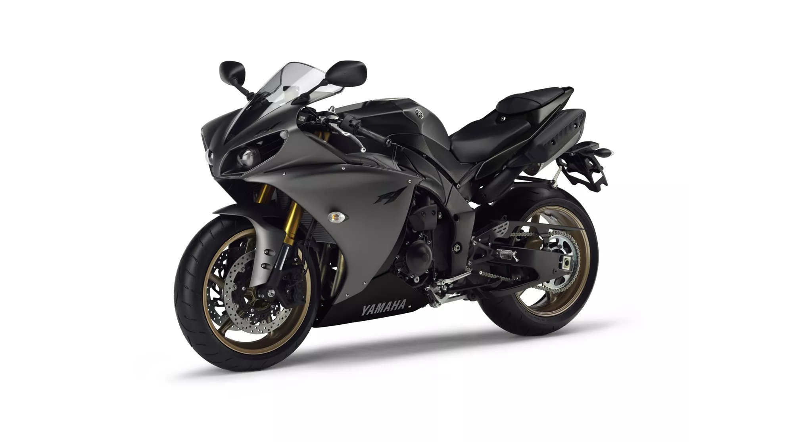
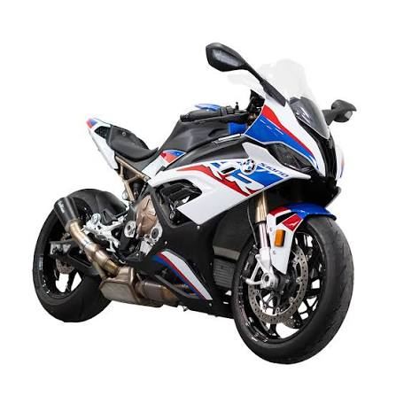
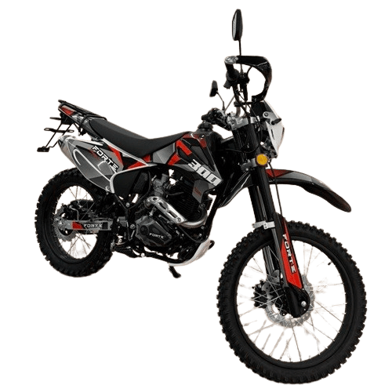
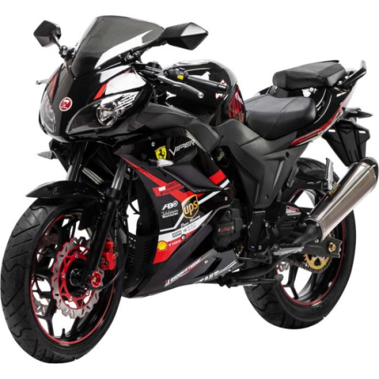

Motocicleta este un vehicul pe două roți, folosit pentru transport, sport și agrement.
Motorul este partea principală a motocicletei. Acesta produce energia necesară pentru deplasare.

Sunt rapide și sunt construite pentru performanță.

Sunt potrivite pentru drumuri dificile și teren accidentat.

Viper este o motocicletă sportivă, agilă și modernă, cu un design agresiv și un motor puternic.